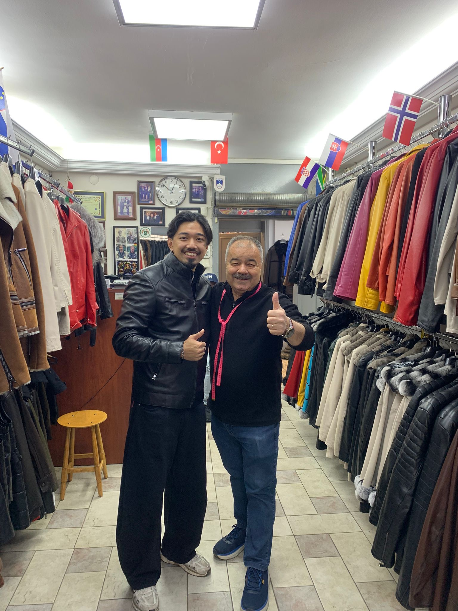
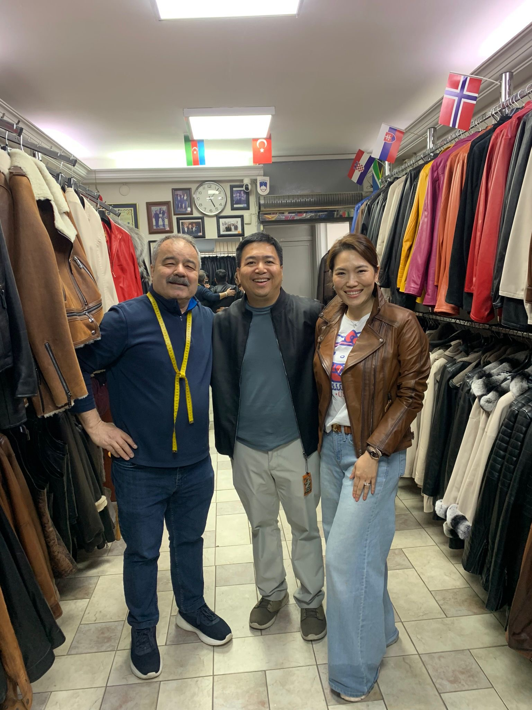
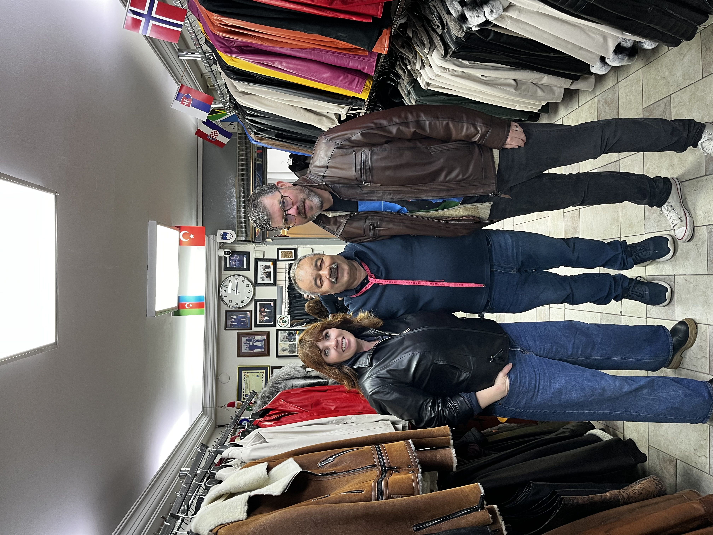
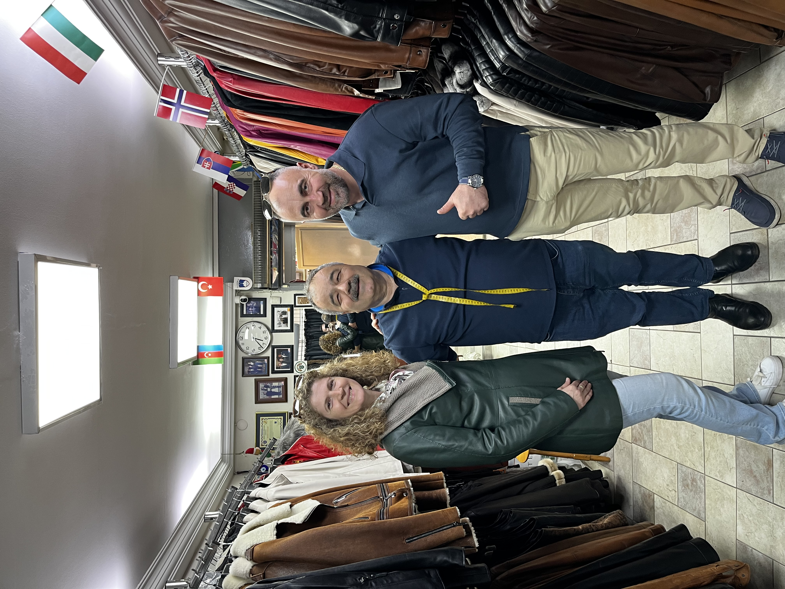

★★★★★ Gerçek ziyaretçilerimizin değerlendirmeleri.
Google Yorumlarını Oku Tripadvisor'da Tavsiye Ediliyor40 yılı aşkın süredir Has Leather, İzmir'in tarihi Kemeraltı Çarşısı'nda dünyanın dört bir yanından gelen ziyaretçileri ağırlamaktadır. Hakiki deri ceketler, kaliteli işçilik ve zamansız tasarımlar konusunda uzmanız.
Real customers from around the world.




📍 Anafartalar Caddesi No:418 Kat:1 / 106
Kemeraltı – Konak / İzmir